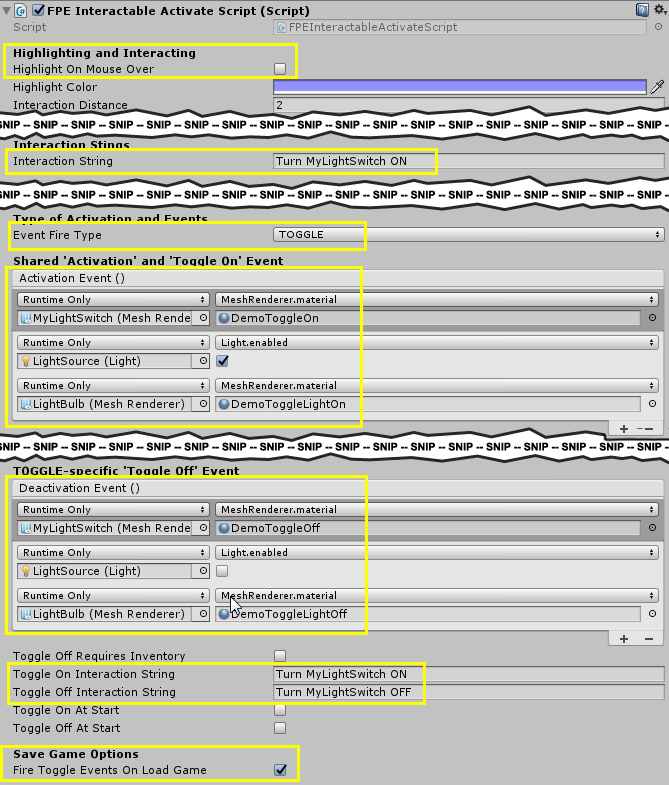

First Person Exploration Kit: Creating a Simple Toggle (Light Switch)
Toggles are a special kind of Activate object that use the TOGGLE Event Fire Type. Please refer to the general Activate Type documentation for more details on various Activation types available in this package.
Creating a Light Switch
- Create a Cube, and name it MyLightSwitch.
- Scale the Cube to (0.2,0.2,0.2).
- Give the Cube a Material such as the included DemoToggleOff.
- Create a child Sphere of MyLightSwitch, and name it LightBulb.
- Assign a material to LightBulb, such as the included DemoToggleLightOff.
- Create a child Light (Point Light) of MyLightSwitch, and name it LightSource. Scale it so it looks how you want it to. Then disable the Light component of LightSource.
- Select MyLightSwitch, and add the FPEInteractableActivateScript component.
- Configure the Inspector values as follows:
- Uncheck the "Highlight On Mouse Over"
- Change the base Interaction String value to be the same as your Toggle On strings.
- Event Fire Type: TOGGLE
- Assign 3 'Toggle On' events: Change material of LightBulb to 'on' material, enable Light in LightSource, and change material of MyLightSwitch to 'on' material.
- Assign 3 'Toggle Off' events: Change material of LightBulb to 'off' material, disable Light in LightSource, and change material of MyLightSwitch to 'off' material.
- Change Toggle On/Off strings to something like "turn light on" and "turn light off".
- Ensure that "Fire Toggle Events On Load Game is true.
- Run the scene, and interact with the MyLightSwitch object. The light will toggle between on and off states. If you save and load the game, the switches states will also be saved and loaded.
Here is a screenshot of the completed Inspector value assignment:

Here is what our simple toggle looks like in game in the Toggle On and Off states: